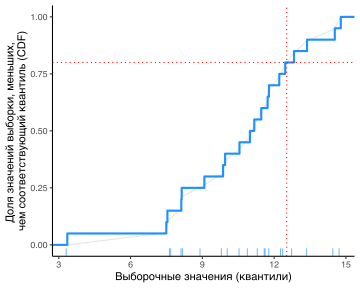

Для начала надо загрузить необходимые библиотеки.
suppressPackageStartupMessages(library(tidyverse))
suppressPackageStartupMessages(library(magrittr))
library(ggpubr)Для всех заданий нужно предоставить код решений + какие-то комментарии (если в задании был задан какой-то вопрос - то ответ на него). Свой ответ вы можете составить в любом удобном Вам виде (например, в виде документа MS Word). Однако, рекоммендую Вам ознакомиться с R markdown и отправить мне решение в формате Rmd.
Создать выборку случайных чисел (функция rnorm) длиной \(10^5\), распределенных нормально с \(\mu=10\) (среднее) и \(\sigma=3\) (стандартное отклонение). Сохраните полученный вектор в переменную x.
Построить гистограмму с помощью функции hist (или gghistogram), посмотреть на форму распределения. Похоже на нормальное? Попробуйте изменить число столбцов.
Попробуйте наложить график функции плотности вероятности. Погуглите, как это сделать. Потребуется наложить два графика друг на друга и сделать так, чтобы высота столбцов гистограммы была в единицах плотности вероятности, а не как по умолчанию (кстати, что там по умолчанию?).
Посторойте QQ-plot данной выборки и выполните проверку на нормальность с помощью shapiro.test. Нормально ли распределение?
Сохраните в переменную x_start20 первые 20 элементов из вектора x, а последние 20 элементов в переменную x_end20.
Посчитайте среднее значение для `x_start20.
Посчитайте дисперсию для элементов с номерами (индексами) \([2, 5, 10, 30, 50 , 100, 200, 300, 500]\).
Посчитайте, сколько элементов в Вашем векторе случайных чисел \(< 8\) (для этого вам нужно сравнить все элементы с 8, а затем суммировать значения в полученном векторе результатов сравнения; т.к. TRUE = 1, а FALSE = 0, то sum(my_logical_vector) будет равен сумме элементов со значением TRUE).
Посчитайте долю значений, для которых \(< 8\) (отношение числа из п. 4 к общему числу). А какое теоретическая доля наблюдений (площадь под кривой функции плотности вероятности) должна быть меньше 8 для данного распределения? (используйте функцию pnorm)
Найдите такое число \(x_{0.8}\) (квантиль уровня 0.8), что \(\geq80\%\) значений выборки x_start20 меньше этого числа (то же в виде формулы - \(x_{0.8}: P(X \leq x_{0.8}) \geq 0.8\)). Для этого вы можете расчитать для каждого значения \(x_i\) долю значений, которые меньше \(x_i\) и выбрать то, для которого доля \(\geq0.8\) (это будет эмпирическая кумулятивная плотность, см. синюю линию графика; синими полосками снизу показаны наблюдения из выборки).

А как это сделать? К счастью, есть функция quantile. Она как раз это и делает. А для промежуточных значений (которые нам не встретились) она считает приближенное значение путем интерполяции (см. серую линию).
Посчитайте теперь теоретический квантиль уровня для данного распределения 0.8 (можно использовать функцию qnorm).
Иногда при статистической обработке может потребоваться трансформировать Вашу переменную, чтобы ее распределение было ближе к нормальному. Методов трансформации может быть много, например логарифмирование, извлечение квадратного корня и т.п. (они все относятся к более общей группе Box-Cox transformations).
Предположим, что вы считаете ворон, увиденных Вами окне за каждый час. И вот какие у вас получаются результаты через год.
set.seed(1)
counts = rpois(1 * 24 * 30 * 365, 10)С помощью функции table Вы можете посмотреть на количество наблюдений, когда Вы видели 0, 1, 2, … ворон.
А теперь
извлеките квадратный корень из значений, посмотрите на гистограмму;
посчитайте логарифм значений, табулируйте полученные значения, что значит -Inf?
Нам надо будет избавиться от нулей в данных, чтобы провести логаримфирование. Например, можно перед логарифмированием добавить 1 ко всем значением. Сделайте это.
Кроме того, можно все нули заменить на некое маленькое число. Например, на самое маленькое ненулевое значение \(min(\text{count})_{>0}\), разделенное на 2. Вычислите это число.
Теперь те выборочные значения, которые равны нулю заменим на полученное число. Для этого надо будет взять переменную, “указать” на нулевые элементы с помощью конструкции сравнения и присвоить полученной конструкции вычисленное “маленькое число”.
Мы уже усвоили генерацию случайных чисел с нормальным распределением с помощью функции rnorm. Однако этим дело не ограничивается.
Создайте вектор чисел numbers_1_20 от 1 до 20 с шагом 0.5 (можно использовать функцию seq).
Теперь можно использовать функцию sample, чтобы расположить эти числа в случайном порядке.
Давайте теперь смоделируем рандомизацию 30 пациентов по 3 типам лечения. Для этого создадим список из значений 1, 2, 3, каждое из которых повторяется 10 раз (используйте функцию rep). Теперь вы можете перемешать эти значения (см. выше). Номер элемента вектора - это номер пациента, а значение - это тип лечения. Чтобы было нагляднее, вы можете присвоить элементам вектора имена (функция names), которые будут совпадать с номером пациента (вы можете сгенерировать этот список имен как 1:30, или с помощью функции seq).
С помощью той же функции создайте вектор чисел от 1 до 6 длиной 20 (соответственно, они будут повторяться - это виртуальный аналог кидания кубика 20 раз).
Мы уже многократно пользовались многочисленными функциями в R, а теперь создадим свою.
Например, вот формула для выборочной дисперсии
\[ Var(X) = \frac{\sum_i(x_i-\overline{x})^2}{n-1} \]
Функция для расчета дисперсии будет выглядеть так:
# долго и подробно
my_var1 = function(x) {
mean_x = mean(x)
residuals = x - mean(x)
squared_residuals = residuals^2
sum_squared_residuals = sum( squared_residuals )
n = length(x)
df = n-1
result = sum_squared_residuals/df
return(result)
}
# коротко и быстро
my_var2 = function(x) sum( (x-mean(x))^2 ) / (length(x)-1)
# сравним нашу функцию с встроенной в R
set.seed(1)
x = rnorm(1e5, 10, 3)
my_var1(x)## [1] 9.06353var(x)## [1] 9.06353Теперь по образцу напишите функцию для расчета CV (коэффициента вариации), вот его формула
\[ CV(X) = \frac{\text{Var}(x)}{\overline{x}} \cdot 100\% \]